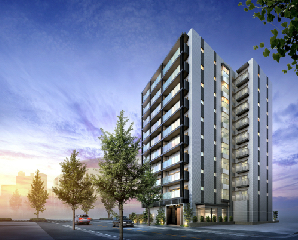

対象物件

東京
1
クリオ武蔵小金井グリーンアベニュー
東京都小金井市本町5丁目
中央本線（JR東日本） 「武蔵小金井」駅 徒歩7分

JR中央線始発駅利用
第一種低層住居専用地域が広がるエリア
南向き中心・3LDK/5,500万円台～
マップはこちら >
東京
2
クリオ富士見台ガーデンテラス
東京都練馬区貫井1丁目
西武池袋線 「富士見台」駅 徒歩3分
南東角部屋・72m2超
3路線利用可能で「池袋」へ10分
閑静な住宅街に立地
マップはこちら >
東京
3
クリオ駒沢公園
東京都目黒区東が丘1丁目
東急田園都市線 「駒沢大学」駅 徒歩16分
「駒沢オリンピック公園」徒歩4分
上質感と風格が漂う目黒区東が丘アドレス
床暖房、食洗機、ミストサウナ等標準装備
マップはこちら >
東京
4
クリオ杉並高井戸
東京都杉並区高井戸東３丁目
京王井の頭線「高井戸」駅徒歩8分
杉並区高井戸東エリア
南東・南西向きの多彩なプラン
吉祥寺へ9分、新宿へ15分、渋谷へ15分
マップはこちら >
東京
5
クリオ清瀬元町
東京都清瀬市元町2丁目
西武池袋線 「清瀬」駅 徒歩6分
西武池袋線始発駅利用
3路線利用可能・「池袋」へ20分
3LDK・南西向き角住戸/3,900万円台
マップはこちら >

東京
6
クリオ武蔵小金井フロントアベニュー
東京都小金井市本町5丁目
中央本線（JR東日本） 「武蔵小金井」駅 徒歩6分
JR中央線始発駅「武蔵小金井」駅
新宿へ20分、東京へ34分
3LDK・最上階・南向き角住戸紹介中
マップはこちら >
東京
7
クリオ ラベルヴィ王子
東京都北区栄町
京浜東北線 「王子」駅 徒歩3分
３駅３路線利用可能
池袋へ12分、東京へ15分
1～2LDKの収納豊富なコンパクトプラン
マップはこちら >
神奈川
1
クリオ横濱天王町
神奈川県横浜市西区南浅間町
相模鉄道線「天王町」駅徒歩7分、「西横浜」駅徒歩8分
「横浜」駅1.5km圏。西区に誕生
フラットアプローチ「天王町」駅へ徒歩7分
「洪福寺松原商店街」徒歩2分
マップはこちら >

神奈川
2
クリオ横濱サザンマークス
神奈川県横浜市西区戸部町７丁目
JR各線、東急東横線、みなとみらい線、京浜急行本線、相模鉄道本線「横浜」駅徒歩11分
「高島町」駅徒歩1分。最終分譲
横浜・みなとみらい・桜木町が生活圏
全邸角部屋・ホテルライクな内廊下設計
マップはこちら >
神奈川
3
クリオ溝の口ガーデンコート
神奈川県川崎市高津区溝口６丁目
東急田園都市線・東急大井町線「高津」駅徒歩9分
フラットアプローチならではの安心の通学路
全77邸・ファミリータイプ中心
渋谷へ直通13分、川崎へ直通16分
マップはこちら >
神奈川
4
クリオ武蔵中原
神奈川県川崎市中原区上小田中７丁目
JR南武線「武蔵中原」駅徒歩8分
等々力緑地へ徒歩9分 穏やかな住宅地
3LDK中心・恵まれた子育て環境
納戸、WIC、WTC等充実の収納スペース
マップはこちら >
神奈川
5
クリオ ラベルヴィ武蔵小杉
神奈川県川崎市中原区今井
東急東横線・目黒線「武蔵小杉」駅徒歩9分、「元住吉」駅徒歩7分
「武蔵小杉」と「元住吉」を使いこなす
全邸南西・南東向き開放的な角住戸
ホテルライクな内廊下仕様
マップはこちら >
神奈川
6
クリオ青葉台
神奈川県横浜市青葉区榎が丘
東急田園都市線 「青葉台」駅 徒歩5分
60㎡超のワイドスパン角住戸
第一種住居地域に誕生
駅までフラットアプローチ
マップはこちら >
神奈川
7
クリオ湘南辻堂イーストテラス
神奈川県藤沢市羽鳥3丁目
東海道本線 「辻堂」駅 徒歩14分
テラスモール湘南まで徒歩圏内
恵まれた子育て環境
実物内覧可能＆実物内覧可能＆即入居可能
マップはこちら >
神奈川
8
クリオ ラベルヴィ川崎南幸町
神奈川県川崎市幸区南幸町２丁目
JR東海道本線・京浜東北線・南武線「川崎」駅徒歩8分
再開発により発展する川崎駅西口エリア
全邸角住戸・ホテルライクな内廊下設計
「ラゾーナ川崎プラザ」徒歩6分
マップはこちら >
神奈川
9
クリオ鶴見豊岡町ウエストコート
神奈川県横浜市鶴見区豊岡町
京浜東北線 「鶴見」駅 徒歩4分
最終1邸。駅までフラットアプローチ
3LDK＋SIC5,500万円台（7階）
角部屋、各洋室南向き、内廊下設計
マップはこちら >
神奈川
10
クリオ上麻生ガーデンコート
神奈川県川崎市麻生区上麻生6丁目
小田急小田原線 「柿生」駅 徒歩6分
「新百合ヶ丘」駅へ1駅2分
「新宿や渋谷へ」スマートアクセス
駅までフラットアプローチ
マップはこちら >
北海道
1
クリオレジダンス新さっぽろ
北海道札幌市厚別区厚別中央二条6丁目
札幌市営地下鉄東西線 「新さっぽろ」駅 徒歩4分
「大通」や「札幌」までスムーズアクセス
駅前に充実の大型商業施設
2LDK～5LDKの豊富なプラン
マップはこちら >
北海道
2
クリオ南7条
北海道札幌市中央区南七条東1丁目
札幌市営地下鉄東豊線 「豊水すすきの」駅 徒歩3分
北海道
3
クリオ札幌大通
北海道札幌市中央区南三条西5丁目
札幌市営地下鉄南北線 「大通」駅 徒歩6分
札幌のミッドポジションにデビュー
2駅利用可能
選べる1～2LDK全8タイプ
マップはこちら >
北海道
4
クリオ円山裏参道
北海道札幌市中央区南二条西25丁目
札幌市営地下鉄東西線 「円山公園」駅 徒歩4分
全35邸の瀟洒のレジデンス。
ワンランク上の上質感
2LDK～4LDKプラン
マップはこちら >
北海道
5
（仮称）クリオ平岸プロジェクト
北海道札幌市豊平区平岸三条９丁目
札幌市営地下鉄南北線「平岸」駅徒歩4分
幹線道路から少し奥まった静かな環境
角住戸中心・全36邸
「大通」駅へ7分、「札幌」駅へ9分
マップはこちら >
福岡
1
クリオ ラベルヴィ呉服町
福岡県福岡市博多区下呉服町
福岡市営地下鉄箱崎線「呉服町」駅徒歩5分
「天神」へ2分、「博多」へ4分
貝塚線「呉服町」駅徒歩5分
1LDK・2LDKのコンパクトレジデンス
マップはこちら >
福岡
2
クリオ室見
福岡県福岡市早良区南庄4丁目
福岡市地下鉄空港線 「室見」駅 徒歩14分
明和地所株式会社、福岡県第1号物件
原北小学校・中学校が通学区
全住戸ワイドスパン
マップはこちら >
キャンペーン概要
■2017年1月7日(土)から2017年1月31日(火)の期間に、対象物件をご成約頂いた先着30組様が対象となります。
■対象物件は、予告なく変更となる場合があります。詳しくは各物件の営業担当にお尋ねください。
■期間中に30組に達した場合は、本キャンペーンは終了となります。
■本キャンペーンは1契約につき一回限り有効となります。
■商品券発送先は、原則としてご成約時にご登録いただいたご住所またはご成約いただいたご住所となります。また発送先は国内に限ります。
■商品券発送は、ご成約頂いた住戸のお引き渡し後となります。
■本キャンペーンプレゼントの権利は、換金または第三者へ譲渡できません。
■当社が不正とみなした場合は、本キャンペーン対象外とさせていただきます。
■不動産業における景品類の提供の制限に関する公正競争規約により、他のキャンペーンと併用出来ない場合がございます。
■商品や本キャンペーン内容は、予告なく変更となる場合があります。
■販売終了や販売スケジュールの変更等に伴い、対象物件が変更となる場合があります。詳しくは係員にお尋ねください。